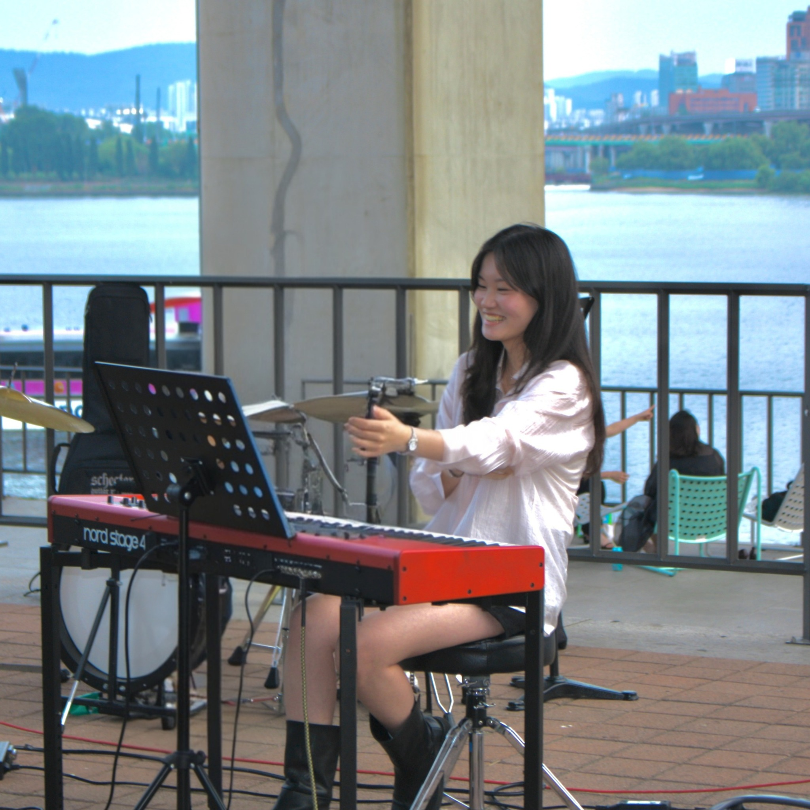
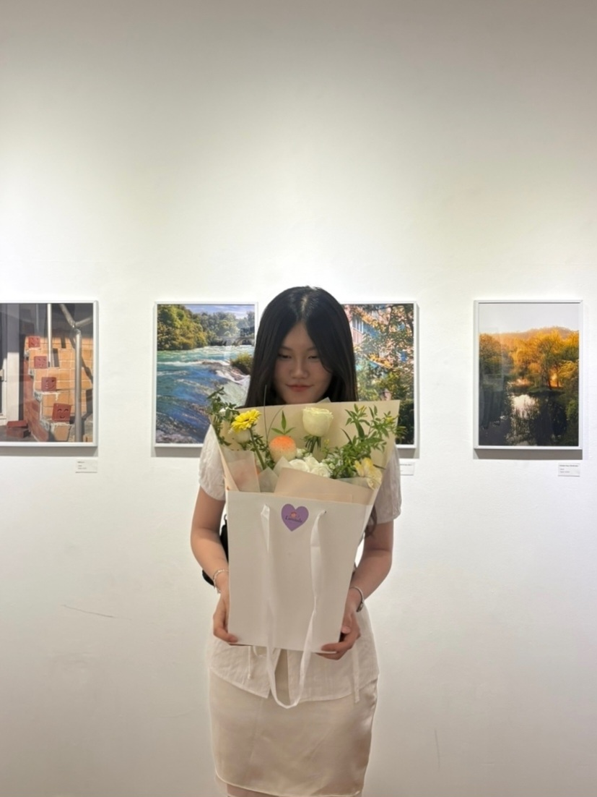

Ding Dong Pizza
A VR scooter pizza-delivery game.VR 스쿠터 피자 배달 게임.
Code on GitHubGitHub 코드 ↗Beyond research연구 밖의 이야기
Music, photographs, places, games, and stories. A few things that keep me curious.음악과 사진, 여행과 게임, 그리고 이야기. 연구 밖에서 나의 호기심이 향하는 곳들입니다.
2022–2026 · Graymood
I played keyboards in Graymood, SeoulTech’s university-wide band club, taking part in campus festivals and other live performances.서울과학기술대학교 중앙 밴드 동아리 Graymood에서 키보드 파트로 활동하며 학교 축제 등 다양한 공연에 참여했습니다.
In 2023, I served on the executive team as keyboard section leader, taught music theory, and was responsible for concert direction.2023년에는 키보드 파트장으로 임원진을 맡아 화성학 수업을 진행하고 공연 감독부를 담당했습니다.

2026
I joined Eoui Photography Club at SeoulTech and exhibited my work in its Spring 2026 regular exhibition. I also enjoy shooting on film.서울과학기술대학교 중앙동아리 어의사진반에서 활동하며 2026년 1학기 정기사진전에 출품했습니다. 필름카메라로 사진을 찍는 것도 좋아합니다.

Always heading out into a wider world.늘 더 넓은 세상으로 나아갑니다.
I make games as a hobby.취미로 게임을 개발합니다.
A VR scooter pizza-delivery game.VR 스쿠터 피자 배달 게임.
Code on GitHubGitHub 코드 ↗A travel game set in Paris.파리 여행 게임.